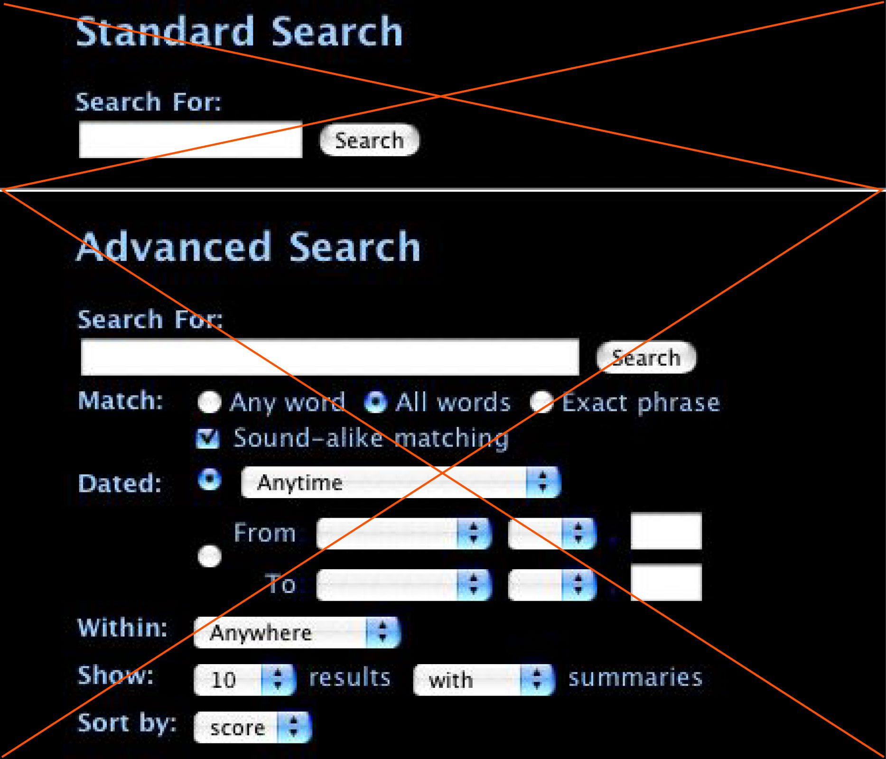

These Index files do not presently have a search engine built in. We are working on one. In the meantime, there is a way for you to add the search function IF
- you understand the rudiments of adding already-written html code to page,
- you have a connection to the internet (perferrably persistant),
- you have personal web sharing enabled on your computer, and
- you are willing to subscribe to a free search engine provider like www.atomz.com.
Go to Atomz for information on how to make the Search function work. See the Search Buyer's Kit. What you will end up with is something like what you see in this example picturesd below.
